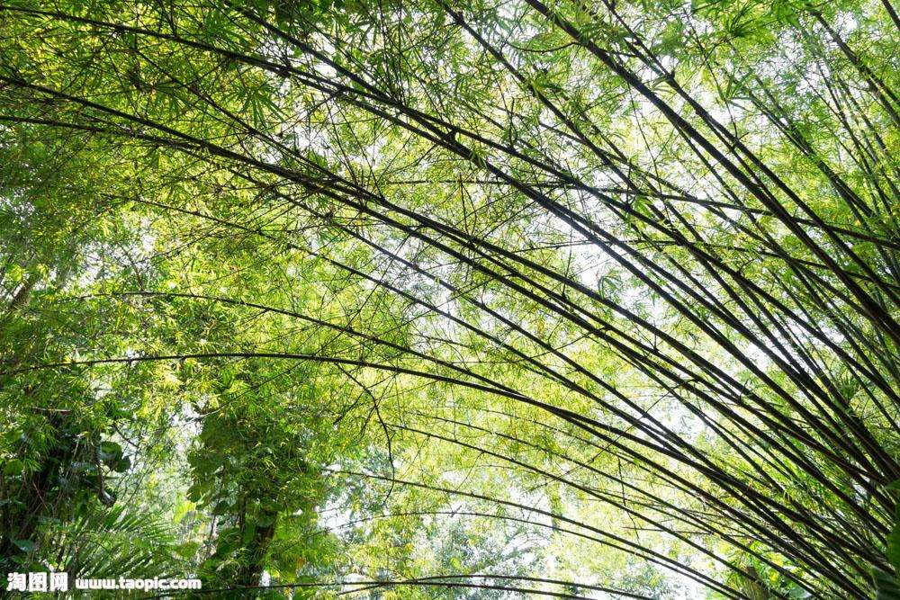
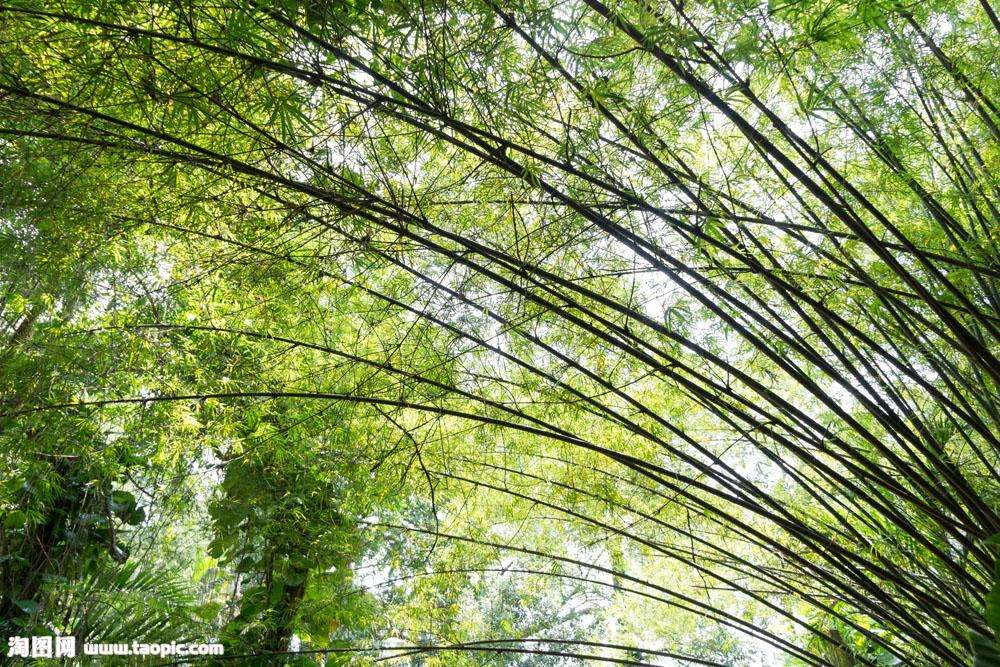

一周间，冯小刚新片《芳华》撤出国庆档一事引发热议，简要说，持论者无非“题材敏感说”“宣推炒作说”“资本胁迫说”三种，普通吃瓜群众无非吐吐槽，说说风凉话，跟着“敏感”繁衍敏感，跟着“炒作”加剧炒作，跟着“胁迫”自得其乐……24日上海路演现场，“誓死不怂的六爷这次落泪了……何其悲壮”……记者笔墨已然跨界编剧？ 很难说冯导的人设就一定是“小钢炮”，因为昭告天下说“冯裤子”就是冯导人设的，可能是同一拨，而所谓公众人物之“人设”，原本就带有共谋性，是大众传播中买一赠一的“作品”：既然会“众口铄金”，也就会有“众口塑人”，我们把自己的想象投向公众人物，他们的“人设”里也就有了我们的假设，忽而怒怼观众“垃圾”，忽而鞠躬致歉“对不起”，这看似牴牾的设定有些源于我们：我们的想象、期待或憧憬……我们也不比哪怕笨嘴拙舌的记者更不“编剧”啊。 这不，冯导的人设这就可以添加一个新延展：老司机？而说到老司机，老斯基财经的观点是，“翻车又如何？冯小刚依然是中国唯一的电影大师！所谓电影大师不是说冯小刚水平有多高，而是说今天还能坚持漂移的，也只剩他一个了……（尽管这回老司机冯小刚又翻了车），可细看小说《芳华》就能发现，还是那个困扰了我们半个多世纪的问题，什么是战争，什么是英雄”……照此，是不是该给冯导人设里再添个“思考者”选项？
熬 作者/赫恩曼尼 曾宁知道自己快要熬不下去了，却依然熬着。所有人都是这么熬着的，就像在一寸一寸滚烫的水里徒劳等待沸腾，等死。 她的母亲是这样熬着的，在比她还年轻的年纪有了她，生下曾宁时，母亲的母亲已病入膏肓，每日来回揉搓母亲的手，一双眼睛却不聚焦，不认得。她刚会走路，母亲的母亲就在飘雪的寒夜离开人世，眼角挂一滴泪，到清晨已干涸成粉末。 追悼会当天，多日无力安睡的母亲睡得人事不省。终于睡饱了，睁开眼，全家人十几双眼直愣愣地瞧她，以为她心力交瘁，险些去陪了葬，七手八脚拽她起身，简单洗漱，连拖带拽进了灵堂。母亲也不招呼宾客，只盯着不远处薄薄的黑白人像，笑了。替她擦洗沾满屎尿的身体，夜里给她翻身，听她咬着牙呻吟，一瓶瓶透明的药液滴进她枯瘦如老树的手臂，她依然揉搓母亲的手，不认得。从梦里惊醒，不知是盼她好，还是盼她死。 这下，母亲的母亲、母亲、全家终于不必受苦了。 她已够懂事，不乱跑，不乱叫，每顿饭吃光碗里的饭，睡觉时自己爬上床，母亲却依然在二十年间花白了头发，不到五十岁便瘦成八十岁的老妪。大学放寒假回家，她牵着全身赤裸的母亲，乳房已干瘪得只剩两颗乳头、一条条肋骨赫然而立的母亲走入澡堂，竟觉自己也早早衰老。
前几天看到一个真事，特别魔幻： 网贷公司收到客户的感谢。这个客户是孤儿，分期买了个3000元的手机，没还钱，催收人员搜罗他的亲友，打一圈恐吓电话，结果把他亲生父母给找到了…… 明明只想当个狼性的黑道大哥，结果帮孤儿找妈妈，这个打开方式，也是惊喜又惊吓。 不过呢，残酷的真相是，如果你欠了贷款平台的钱，这群狼一样的男人，会干出更可怕的事，他们能揪出你家祖宗十八代，挨家门口泼大粪。 上周六我们征集了“你欠过的那些还不起的债”，才知道，很多年轻人，被欺骗，被背叛，被家庭拖累，或者为自己的欲望付出代价，也有些人，只是为了维持正常生活，就欠下了一笔笔无力偿还的债务。 那些欠债的日子，被他们比作“监狱”。好在，大部分人最后都“出狱”了。 我也曾体会过被巨债支配的恐惧。工作第一年因为买买买，欠了五万信用卡，靠家人帮忙和拼命写稿，终于还清。希望你们不要重蹈覆辙。 光是维持生活，就已经竭尽全力!
宋瓴烫了个非主流波波头，她可爱的小脸很适合这种调皮的发型。这种发型在十多年前流行过，那时候很多女孩子都去烫这种古怪的发型。她并不喜欢，是菲菲姐怂恿她去烫的。菲菲姐说既然有客人喜欢，要赚钱就得迎合他们。 她住在白沙泉东二巷70号三楼朝南的房间里，刚刚醒过来，头发蓬乱，她又睡到傍晚。白沙泉挨着宝石山，也挨着黄龙的耳蜗，这里很像她的山城，几条主要的街道都沿着宝石山的山体往上走，参差不齐的建筑群挤成一团。夜色拾级而上，在坡道最平稳的地方，附近的饭馆已经开始热闹起来，店门外面坐着许多等待吃饭的男女。白沙泉的年轻女人此时大多坐在美容店和美发店里面（白沙泉大大小小的美容店和美发店跟饭馆一样多，汇集于街道各处，就像失去秩序的蜂房），匆匆忙忙地让美容师和美发师帮她们化妆、做头发，这里的女人比男人可多得多，而且还是好看的女人，她们是夜中大水，也是黑暗之光。 宋瓴的房间里亮着一盏彩色玻璃灯罩的装饰灯，就像教堂里那种静谧的蓝色、红色和黄色为主的颜色，最后的黄昏，窗外掩藏在树影里的路灯发出频率并不稳定的白绿色幽光，照进她的房间，交织着屋内斑斓的灯光，让她古怪的脑袋深深地沉向自己。“小气鬼。”她自言自语，突然想起昨天没有帮她充话费的客人，但马上又把他忘记了。她也忘记了窗外正在醒过来的夜色，以及与山城一样热闹的白沙泉街道。
她在飞机上装睡了一路。 阳光透过云层，透过窗子，在她脸上荡漾出边界不清的光圈，她感到脸颊被晒得微微发烫，于是侧了侧身子，苏晨的肩膀就正好接住了她下坠的头。 她继续装睡，他继续低头凝视她的脸。这张脸干干净净的，甚至有点寡淡，眉毛是轻描淡写的，嘴唇也是轻描淡写的，唯有鼻梁上的一枚黑痣让她的五官鲜活了一点。她的睫毛稀疏而柔软，温顺地盖在眼睑上，令她看起来像一只刚出生的小狗。 苏晨握住她的一只手，那只手一如既往的冰凉，仿佛她是生活在冰冻的世界里，表情是被冻住的，语言是被冻住的，年龄也是被冻住的。她看起来真不像三十多岁的人，但也不像二十几岁的姑娘，皮肤没有一丝细纹，却也没那么饱满弹滑；眉眼间没有岁月沉积的痕迹，却也看不出青春少女的气息。 她轻抿嘴唇，控制住自己的呼吸，尽量放松两腮的肌肉，思忖着自己的睡脸在苏晨眼里是不是足够好看。她不是不想和他聊天，只是他们仅剩下飞机上这两个小时的相聚时间，而沉默能将时间拉长。空姐开始给乘客分发食物，路过这对凝固在空气中的男女时停顿了一下，最终什么也没问，便又走开了。推车上的饮料瓶发出叮叮当当的声响。 飞机降落时，她把头从苏晨肩上移开，舒展脖子，打了个优雅的哈欠，故作羞怯地捏了捏他的肩膀，“睡了一路，你胳膊都酸了吧。”
那或许是她过往人生中唯一的传奇，却恰恰成了仅有的不可言说。 东君坐在几乎能把自己瘦小的身子当做包子馅一样裹起来的皮沙发上，默默转动手中的玻璃杯，用拇指轻轻擦拭杯口淡淡的唇印。她其实没有什么话要对腿仔说。 就像若干年后，她坐在窗边吃早饭，年迈的父亲还是习惯性地剥好一颗白煮蛋递给她，说大院里的孩子们好像要在拆迁之前组织个同学会，你这个做老师的去不去啊。那一刻她同样无话可说，只能接过饱满的鸡蛋，掰开蛋白蘸进一小碟醋汁里。最讨厌的情形就是曾经的学生们长大成人明白过事儿来，再照面总有种心照不宣的意味，像一整颗蛋黄，噎在喉咙里。 十一月的风掀起一层复一层的海浪，高大的亚热带乔木整齐地倒向一侧，天光黯淡下来，这情形让她倏忽想起自己度过幼年的地方。那个横陈在赤道上的岛国，那片种植园，那幢海边的白色房屋，连绵雨季到来时窗外就是这般模样。她想起被她丢进海里的那根树枝，也想到了唯一能够对腿仔说的话，越是近在眼前唾手可得的东西，越是不能轻易伸出手，因为太容易了，太容易，就太糟糕了。 自己的童年有没有被后来的谎言一遍遍美化过？有？没有？东君一口一口咬着巧克力，巧克力就是她的乡愁，她这样告诉每一个人。
本周单字“江”。上周末至本周，一年前的江歌遇难案因为“局面”的主题专访，再度成为关注焦点，作家贾葭对这一媒介介入颇有看法:“这次我比较反对新京报这档节目的介入，此案还在侦审阶段，证人不宜见家属，媒体不宜报道。这个节目延续了过去中国类似事件中的‘未开庭先报道’的试图以舆论影响司法的恶习……法律审判之后才有呈现事实的可能，才有舆论，那个时候再来谈道德审判（不迟）。” 作家连岳说：“法律的本质是维护人性的、自然的规则，它唤不回死者，它更不是关怀凶手，它是通过惩罚告诉所有其他人：欠债，就得还钱，杀人，必须偿命。只有这样，人们才觉得公平，人类社会才不会被坏人利用，对善于表演、毫无道德压力的坏人来说，杀了人，假装忏悔，一点也不难。” 作家李方说：“我们不敢扶摔倒的老人，也不相信危难时刻会有人伸出援手。我们期待人们基于责任和道义的担当，但是不确信自己落难时候会遇到这等好事。因此当我们猎获一个刘鑫，我们就有了天然的理由，去放纵自己的恐惧和愤怒，以人性和道德的名义。普遍的匮乏感和不安全感，构成了点燃公众怒火的基础。在这个意义上，刘鑫怎么想、未来会怎样，已经完全不重要了。她只是一个祭品，运气差到在人们寻找一个祭品的时候，出现在恐惧的祭坛上。
案发现场正如一场狂风暴雨来临之前的铺垫，预示着我未来险恶的生活。警戒线拉起的范围之内，血腥味浓重，法医镇定自若地把那些残肢从树叶堆里扒拉出来，放置在一块白布上，再重新拼凑，大致已经呈现出轮廓，预料中的一样，是个女人。 尸体被肢解，头颅挂在树上最显眼的位置上，四肢藏在泥土里，腰部到大腿根的部分照常失踪，这是凶手特有的癖好，作案像场仪式，弃尸当作炫耀，又似是在宣告，但却细致地没留下一点蛛丝马迹，没有指纹，脚印随着落叶被掩埋，再加上一场大雨，根本就是毁尸灭迹。 凶手把抛尸现场选择在国道两侧，行事高调，目的明确，总结起来特别简单，而且十分笃定，他想告诉大家，务必要抓到他。 赵焕拖着沉重的脚步从警戒线里弯腰钻了出来，丢给我一支红塔山，接着又从口袋中拿出盒火柴，帮我点燃烟后，他甩了几下，火光熄灭，眯着眼，深深的抬头纹让他显得沧桑，他抽了口烟，看向远处的日落说：“你怎么看？这他妈都第三起了，可以定性为连环杀人案了吧！” 我看着头颅被警员们踩着梯子小心翼翼地摘下后说：“我不懂他为什么这样做？” “谁？” “凶手，三起案件，死者均为女性，作案手法一致，单从我们掌握的线索入手调查的话，实话说，没有丝毫可以找到方向的头绪。”
这些民谣歌手火起来的原因究竟是什么？我才不相信他们在媒体采访上说的鬼话呢。 据我明察暗访，他们有一些不为外人了解的秘密武器：比如李志演出前，要吃一大盘折耳根，如果恰巧没有，那他就不演；万晓利要打坐，神游物外，再聚精会神上台；有人演出前要点一支香，心如止水气沉丹田；有人要听新闻联播，等天气预报的音乐响起，凭借这强大气场一跃上台。周云蓬呢？这次“苦瓜音乐节”，我主要考察他。 该老周上台了，我举起望远镜，从头到脚仔细观察。他用的吉他是七根弦的，加拿大的第一吉他品牌：Godin。脚上穿的是马丁靴，无聊，唱民谣的，应该穿唐装汉服，飘飘欲仙的，多有范儿。帽子，喔，不戴绍兴乌毡帽了，换了顶莱昂纳多•科恩常戴的费多拉软呢帽。没啥新意。 不对，老周今天唱歌的声音有点不同，明亮宽阔，吐字清晰，有点水音儿或者金属质感。我的望远镜，聚焦在他的麦克风上。哇噻，他竟然用的是世界顶级话筒：钮钴禄氏。这款话筒，我只在网上见过，第一次现场听到它的品质，果然非同凡响。我再仔细观瞧，话筒通体乌黑，闪闪发光，这是“钮钴禄氏”的最新款，电容跟动圈结合，话筒有专门的指向性，人声传达得真实明晰，周围的乐器声环境声自动屏蔽。我越看越心惊。他妈的，我要有这么一个就好了，哪怕女友立刻要分手，也在所不惜。可是，太贵了，我街头卖唱，就算不吃不喝，也得攒上半年的钱才买得起!
本班男生体格之强弱，从座位就一目了然。弱小的坐前排，强壮的坐后排，这是条明规律。还有条暗规律：通常弱小的成绩好，强壮的成绩糟。 我成绩稳定在前十名，紧挨讲台坐头一排，是老师眼中的好学生。但对一个初中男生而言，这没什么可骄傲的，相反会招致无尽的耻辱。以李强彪、陈劲松为首的那伙后排男生，欺负起我来简直毫无压力。 至于班上那些女生，只有在考试成绩张榜时，才会朝我投来片刻仰慕的目光。而在课间，当李强彪们撸起袖子走向我，摆开电视上鲁智深倒拔垂杨柳的架势，弯下身叉住我的腰胯，把我倒着提起来，狠狠摔在地上，也称之为“倒拔垂杨柳”时，她们全都跟着哄笑，半点同情心都没有。 彼时彼刻，我不再是尖子，活脱一只马戏团的猴子。我愤恨、羞恼，但我忍着不落泪。这是我男子汉尊严的最底线。 尽管本班女生当中，颇有几个姿色出众的，但我情窦初开之时，从未将她们列为追求对象。 我恨她们。我也不敢同她们好，因为我清楚，即使她们中有人答应做我女朋友，我也无法成为一个有尊严的男朋友。
每天早晨我都要上秤，因为这决定了我能不能出门。 众所周知，汽车尾号限行已经不能解决城市拥堵问题，于是我们想出了更伟大的办法——限人。但是人毕竟不是一串数字，没有单双号。有人提议根据单双眼皮来限制出行，很快就被否决了。反对派只提出了三个问题：看起来很单的内双怎么监督管理？眼睛一双一单是否会成为特权阶级？拥有三层眼皮的人到底是算双眼皮还是单（数）眼皮？ 这么看来，上秤还是有上秤的优越性。十八岁以上的成年人，以十公斤为区间，每日轮流限制出行。比如今天的街上也许充斥着穿S码的人，明天又忽然都是M。但是由于只看体重这一项指标，男的女的都有一点儿，高瘦的矮胖的都有一点儿，好看的不太好看的都有一点儿，健全的不太健全的都有一点儿，一眼望过去挺什锦的。 我对这事很有发言权，因为我是一个公交车司机。每天不是看路，就是看车，不是看车，就是看人。我们七十公斤级的车厢是一派祥和的，男女老少看起来谁都能打得过谁。换成重量级特别低或者特别高的就比较痛苦。一堆瘦子挤公交车硌得骨头疼，一堆胖子挤公交车则苦了售票员的嗓子。每到一个站，售票员就要大吼，来来来，上客了上客了，大家吸气！ 我的售票员叫小包，然后她也是我的女朋友。这句话体现的主要是时间顺序。也就是说，她首先成为了我车上的售票员，然后勾引了我。朋友们，这并不容易。小包只有一米五五，历经千辛万苦才增肥到和我一个重量级。据小包口述，有时候她的体重实在不够，每天灌下去一公升的水才能勉强出门，而这一切只是为了见到我。我很感动，也很震惊。公交车的工作时间决定了我们没有很多上厕所的机会，行驶起来的晃动以及高峰期乘客的挤压也十分影响憋尿的效果，而小包的膀胱居然扛住了这种种压力。这让我觉得她肯定是一个非常内秀的女人。后来我们终于躺在了一起，我最喜欢做的事情就是趴在她的身上，听她心脏跳动的声音、肠道蠕动的声音。无论脂肪层变得多厚，这些声音都清晰、坚定地传到我耳边，带给我力量.
人们都说临近高架的地方风水不好，具体怎么不好我很感兴趣，因此有人再次在公司提起的时候，我追问了下去。具体说来就是，房子建筑的地方不能正对着高架，这样高架上的“煞气”就会直接冲进来。化解的办法是在建房时记得和高架错开一个角度，如果没有做这一步，就得在房间正对高架的地方做风水。我们公司风水先生给出的建议是：在相应位置贴一些双手沾满鲜血的伟人像，为他们上供，这些伟人因其本身煞气也很重，所以可将外来的煞气挡回去。接着那同事带我去看会议室，果然看到绿色植物背后的一个角落里贴着希特勒拿破仑以及一些不可描述的名字的画像，画像前面有个小小的香炉，香炉里有显然是今天刚上的香。这里香气弥漫，犹如仙境，然而那味道不甚高雅，倒显得有几分滑稽，引得我只想发笑。进而我发现那香味中有一股杂质，看到角落撒落的烟灰才意识到，这里因为有香烛的掩盖，变成了烟鬼同事们跑来抽烟的地方。那时上海尚没有禁烟，但是在办公室里抽烟也是很不招人待见的，我们这个单位离楼梯间有点远，很多同事不高兴过去，倒是这个大会议室，因为太大而不常用，被借来过瘾。此日之后，我便也加入了这个组织，男同事们会在上班的间隙拍拍我的肩膀，说，走，抽一根去。然后我们便三三两两的来到这里，对着这些双手沾满人类鲜血的刽子手吞云吐雾。抽完之后，我们有时甚至还给他们上一支香，因为在这里抽烟从没被行政部发现，后来就觉得他们不是煞神，倒是保佑我们的烟神。但时间一天天过，不知道是不是上海发展太快高架上车流增多煞气增大，我们发现这个角落里的供上的煞神越来越多香炉越来越大，而随之到来的是，公司的生意越来越不好。我们公司靠着承办早年在上海举办的一个大型国际会议起家，早些年听说挺风光，但发展到现在一直没有取得过新突破。这几年互联网广告在兴起，我们变成了无聊的传统行业，客户对我们的脸色越来越差，越来越嫌弃。其实我们核心团队都在，提供的服务并无变化，然而下坡路的感觉笼罩着每一个人。在那个对着高架的角落放再多的老人头也无法改变颓势了，但糟心的是，我还不能辞职。